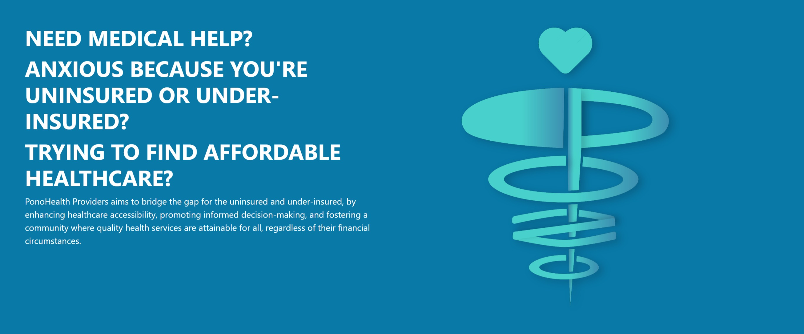

For our final project in my Software Engineering class, we had to create an application using the software stack we have been using throughout the semester to solve a real-world problem. I teamed up with classmates Liam (Kula) Van Asperen, Jakapop Khongnawang, and Taitusi Vadei to develop our application, PonoHealth Providers.
Our project was initially designed as a submission for the Hawaii Annual Coding Challenge (HACC) which takes place in November every year in Hawaii. For that challenge, we were given the prompt to design a web application that takes in 3rd party information about health providers located in Hawaii, and consolidates and provides an easy-to-use UI for users to search through the health services provided in Hawaii. With these guidelines, our group worked on developing our application.
While we were given those guidelines, we also needed to conform to the final project requirements that were given in our Software Engineering class. This involved having a ‘secret sauce’ that takes our application above and beyond, while also using the technology stack in our class. This meant that our web application was going to be produced using React, React Bootstrap, Javascript, Meteor, and MongoDB. What made the process easy was that we were familiar with these software and frameworks, so there was less initial learning curve than if we were to explore different programs to develop our application.
I was first tasked to display cards of providers that held information about each of their services. This required me to learn about mapping and how to display all the information correctly on the page. I also learned more about prop types, which take information from a set of data and ensure that it gets utilized correctly. I was able to successfully get that working, which became the foundation of the filtering page that is on the website today.
My team then added more to that initial setup, such as Kula adding the filtering of the cards that I was able to display, and Jakapop adding an ability for users to favorite cards to their profile. This process required a lot of communication between my team members to ensure we weren’t doubling up on issues or features that we were trying to complete. We made sure that we were all on the same page by having biweekly meetings to discuss what specific issues needed attention and to prioritize certain problems we encountered with our code.
One later issue that I was assigned to was creating a modal, which is essentially a pop-up window that appears when clicking a card. This modal would display more information about the provider that is not on the main page, such as their phone number, who runs the organization, and other specific provider information. This required me to learn more about how modal objects are implemented in React Bootstrap, and how to properly display them. I also worked on a lot of cleanup of the entire app in general. Since we started with a very rough understanding of how we wanted the app to look, there were some visual flaws in the application that I had to fix. This was mainly dealing with padding and margin issues, centering certain images and cards, and removing unnecessary information. I felt that working on this specific issue was very beneficial for me to understand how a lot of the UI and components work in React Bootstrap. I was able to get a lot of hands-on experience with CSS and the React Bootstrap syntax for stylizing pages.
Something that I prioritized for this project was also creating a logo for our group, and a logo for our application. Since I have a strong interest in graphic design, I decided to surprise my teammates with these components in the app. I started with some rough sketches of how I wanted our group logo to look. Our group is called ‘Team JaCKfruiT’ which incorporates the first initial of each group member into the name. This inspired me to create a jackfruit as our logo, which uses our initials as the body of the logo. For the PonoHealth Providers logo, I was inspired by the globally recognized symbol of the caduceus, which is a symbol of health. I then used the word ‘pono’ to recreate a caduceus with our style.
Throughout this process, I felt that I was able to apply all the information that I learned in my Software Engineering class. From learning functional programming to understanding CSS and HTML, this application could be explained as the magnum opus of the class. Working on displaying a list of React Bootstrap cards taught me how to send information between JSX files, mapping, and learn prop types. Working on the UI for the project taught me more about how to utilize CSS for advanced website transitions and aesthetics, and forced me to learn and understand the React Bootstrap documentation on styling. This project enabled me to learn more about our technology stack and overall makes me very excited to explore the topics that we covered in class.
If interested, please check out our GitHub project page for more detailed information about our project! PonoHealth Providers Github Page
Here are the final pages that we created of our finished product!